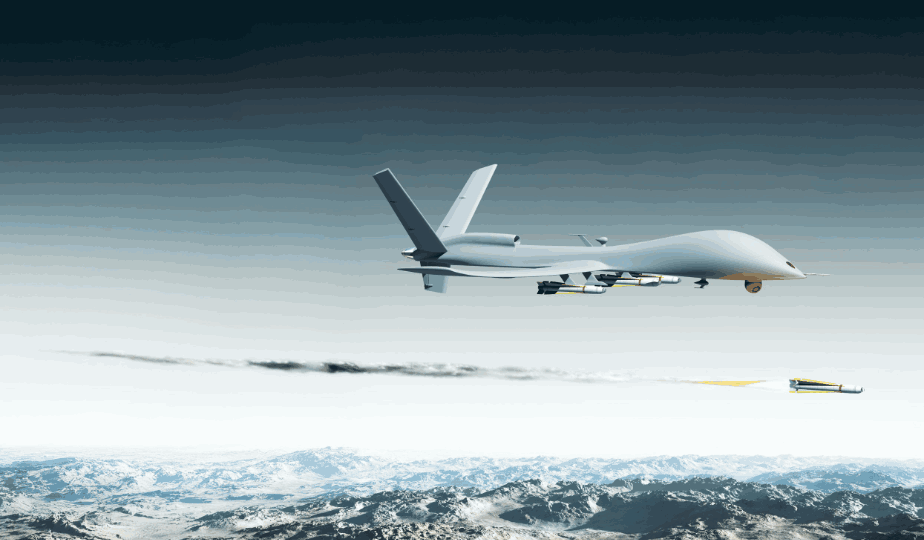
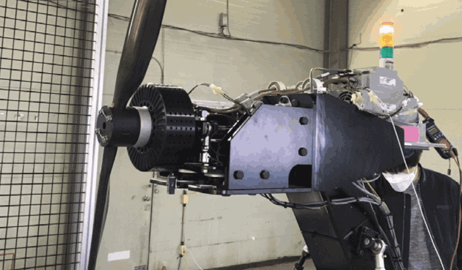
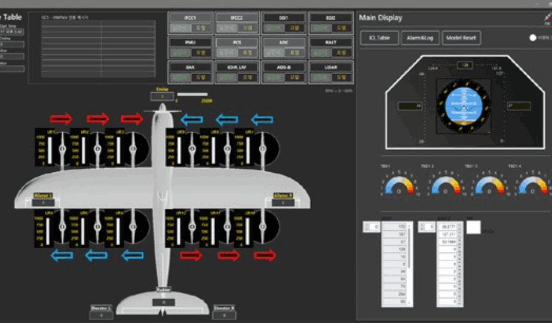
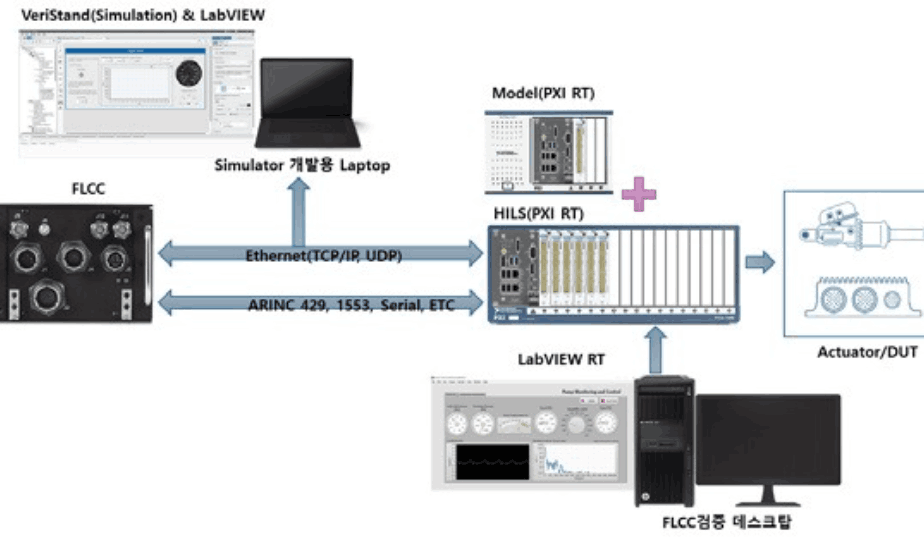
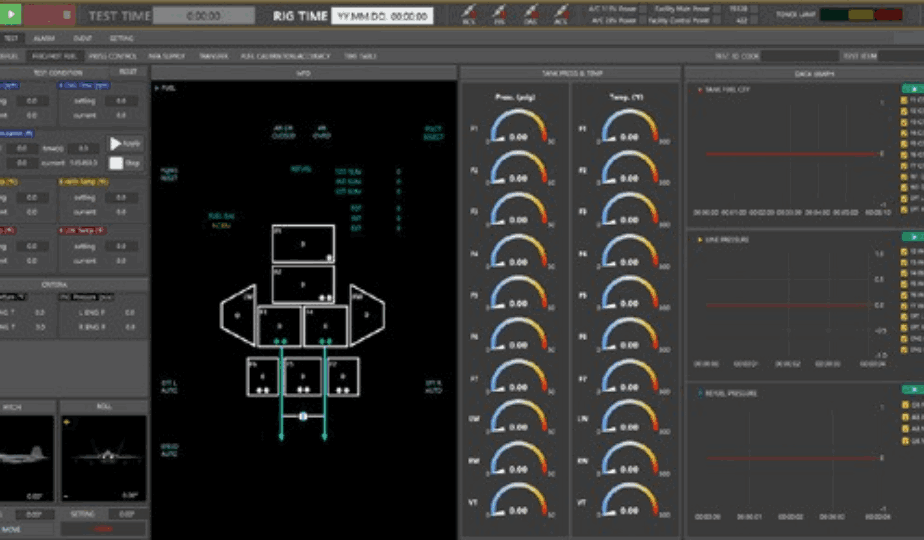
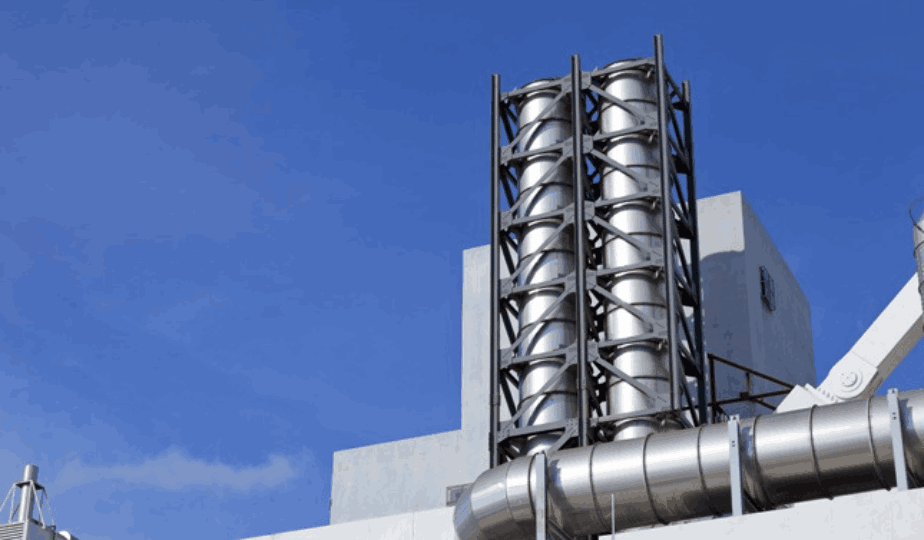
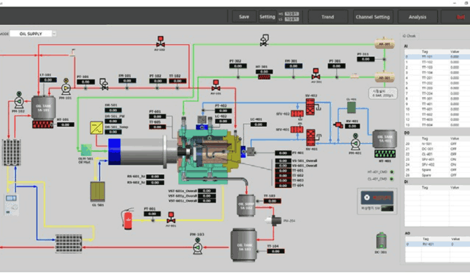
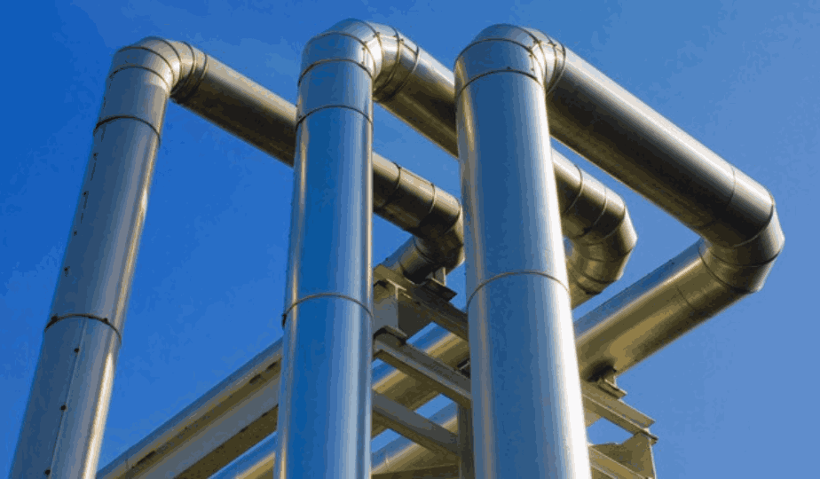

Trust Your
Idea & Technology
실장비 없이 검증하고, 위험 없이 시험합니다. 넥시스는 방산·항공우주 분야의
HILS·SIL 시스템과 시험 자동화 엔지니어링을 설계·구축하는 시험계측 전문기업입니다.
실장비 시험은
비싸고, 위험하고,
반복할 수 없습니다.
항공기·무인기·발사체의 제어 시스템은 단 한 번의 결함도 허용되지 않습니다. 그러나 실제 장비로 모든 조건을 반복 시험하는 것은 막대한 비용과 안전 리스크를 동반합니다.
넥시스는 실장비를 대신할 정밀한 시험 환경을 구축해, 검증되지 않은 위험을 시험실 안에서 끝내는 일을 합니다.
방산·항공 시험 현장이
마주한 네 가지 난제

HILS · SIL.

유·무인기 FLCC HILS
비행제어컴퓨터(FLCC/VMC)의 실시간 검증. COTS 기반 단일·다중 PXI 구성과 Reflective Memory 실시간 데이터 공유로 모델과 실장비를 한 환경에서 검증합니다.

지상점검장비
통신·Digital·Analog 신호 입출력 점검, 1553B·RS422·Discrete 모의 및 실시간 Buffered 데이터 수집·Replay로 LRU 기능을 정밀 검증합니다.

시험 자동화 시스템
KF-X 연료리그 등 항공기 계통 통합 시험장치. 운용환경·자세 모사와 실시간 변수 모니터링으로 반복 가능한 검증 환경을 제공합니다.
전기추진 시험설비
OPPAV Ironbird·150kW 추력시험장치 등 분산전기추진 시스템 성능 검증. 다중 모터 인버터·FPGA 기반 고정밀 제어와 데이터 취득.

원자력 시험설비
STELLA-II 소듐 열유동 시험장치, 핵연료 집합체 기계특성 시험시설. 최대 100Hz 고속 저장과 펌프·밸브·히터 Interlock 제어를 구축합니다.

설비 자동화 시스템
공장·설비 자동화 구축. 다중 PLC Ethernet/IP 통합 제어, P&ID 기반 직관적 모니터링과 Alarm·Interlock 관리로 안정적 운용을 지원합니다.

전기·계장 공사
전기 설비·Cable·Tray·계측기 설치, 제어판넬·MCC 제작과 시운전. 발사체·추진기관·에너지 분야의 전계장 공사를 일괄 수행합니다.
현장에서 검증된
넥시스의 구축 사례
HILS 플랫폼부터 발사체·드론·원자력 시험설비까지. 좌우로 드래그하거나 화살표로 탐색하세요.